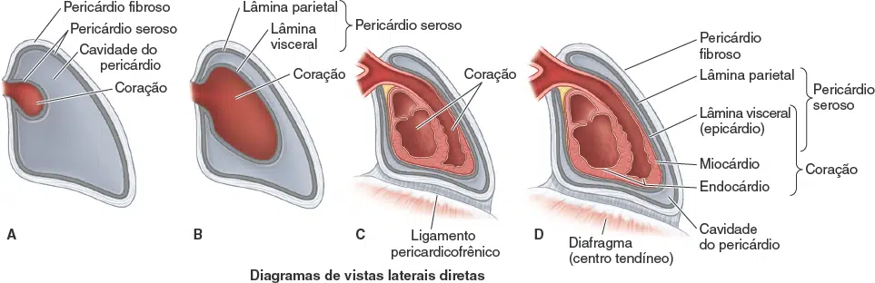
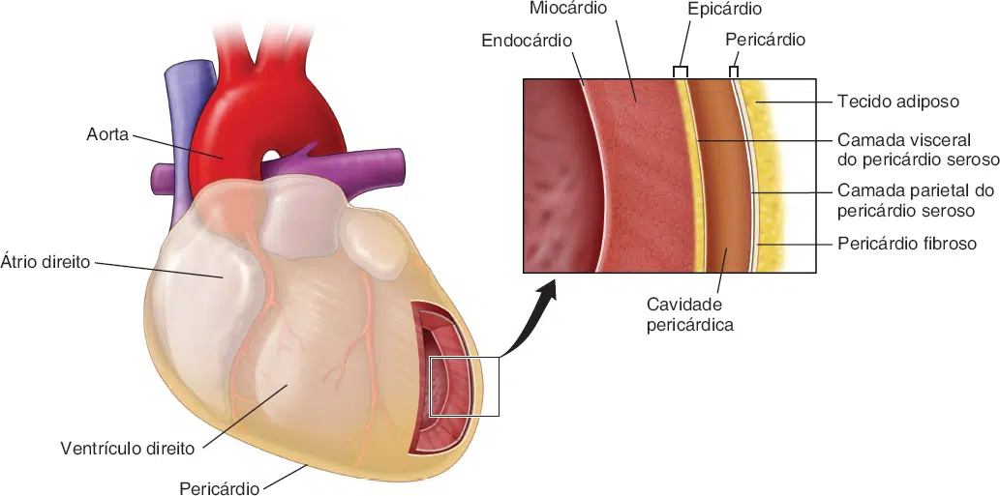
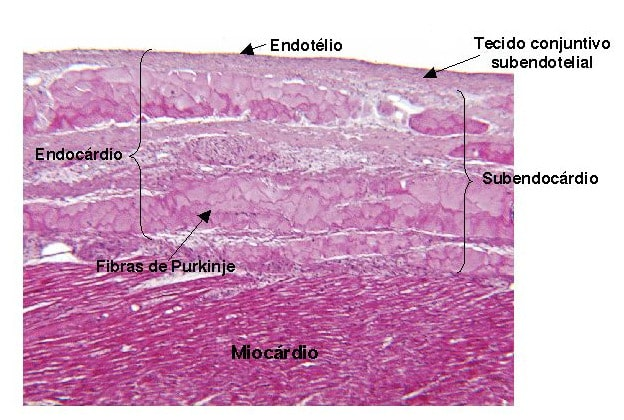
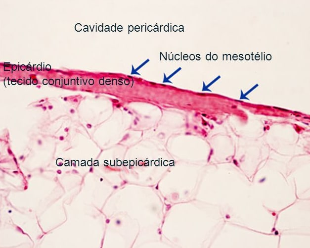

A organização estrutural da parede do coração é contínua nos átrios e nos ventrículos.
A parede do coração é composta de três camadas. De interno para externo, são as seguintes:
Endocárdio , Miocárdio, e Epicárdio .

MOORE: Keith L. Anatomia orientada para a clínica. 9 ed. Rio de Janeiro: Guanabara Koogan, 2024.
Endocárdio
É a camada mais interna da parede cardíaca.
Ela alinha as cavidades e valvas do coração. É semelhante em sua composição ao endotélio que reveste o interior dos vasos sanguíneos.
Estruturalmente, o endocárdio é constituído por tecido conjuntivo frouxo e tecido epitelial simples pavimentoso e uma camada mais profunda de tecido conjuntivo, também denominada camada subendocárdica. Esta última é contínua com o tecido conjuntivo do miocárdio.
O sistema de condução do coração está localizado na camada subendocárdica do endocárdio.
Além de revestir o interior do coração, o endocárdio também regula as contrações e auxilia no desenvolvimento embriológico cardíaco.

ROSS P. W. Histologia - Texto e Atlas. 8 ed. Rio de Janeiro: Guanabara Koogan, 2021.
Camada subendocárdica
A camada subendocárdica situa-se entre e une o endocárdio e o miocárdio.
Consiste em uma camada de tecido fibroso solto, contendo os vasos e nervos do sistema condutor do coração.
As fibras de Purkinje estão localizadas nesta camada.
Como a camada subendocárdica abriga o sistema condutor do coração, os danos a essa camada podem resultar em várias arritmias .

Miocárdio
O miocárdio, que consiste em músculo cardíaco, é o principal componente do coração, um músculo estriado involuntário.
O miocárdio dos átrios é substancialmente mais fino que o dos ventrículos. Os átrios recebem sangue das grandes veias e o liberam nos ventrículos adjacentes, um processo que requer uma pressão relativamente baixa.
O miocárdio dos ventrículos é substancialmente mais espesso, devido à maior pressão necessária para bombear o sangue através das circulações pulmonar e sistêmica.
ROSS P. W. Histologia - Texto e Atlas. 8 ed. Rio de Janeiro: Guanabara Koogan, 2021.
Camada subepicárdica
A camada subepicardial encontra-se entre e une o miocárdio e o epicárdio .
É constituída de tecido adiposo unilocular.

Imagem: http://mol.icb.usp.br
Epicárdio
O epicárdio, também conhecido como camada visceral do pericárdio seroso, adere à superfície externa do coração.
Consiste em uma única camada de células mesoteliais e tecidos conjuntivo e adiposo subjacentes.
Os vasos sanguíneos e os nervos que suprem o coração situam-se no epicárdio e são circundados por tecido adiposo, que acolchoa o coração na cavidade pericárdica.
O epicárdio reflete-se de volta na parede dos grandes vasos que entram do coração e saem dele como camada parietal do pericárdio seroso, que reveste a superfície interna do pericárdio que circunda o coração e as raízes dos grandes vasos.
Por conseguinte, existe um espaço virtual contendo uma quantidade mínima (15 a 50 mλ) de líquido seroso (pericárdico) entre as camadas visceral e parietal do pericárdio seroso.
Esse espaço é conhecido como cavidade pericárdica, a qual é revestida por células mesoteliais
ROSS P. W. Histologia - Texto e Atlas. 8 ed. Rio de Janeiro: Guanabara Koogan, 2021.